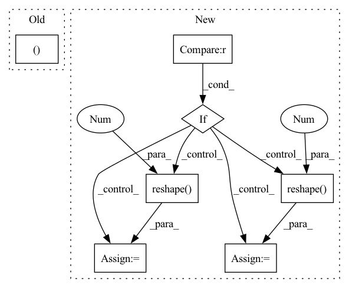

Pattern ID :5072

Before Change
def forward(self, x):
q, k, v = (self.to_q(x), self.to_k(x), self.to_v(x))
b, _, h, w = q.shape
q = q.reshape(b, self.heads, -1, h * w)
k = k.reshape(b, -1, h * w)
After Change
k = k.reshape(b, -1, h * w)
v = v.reshape(b, -1, h * w)
if context is not None:
context = context.reshape(b, c, 1, -1)
ck = self.to_k(context).reshape(b, k_dim, -1)
cv = self.to_v(context).reshape(b, k_dim, -1)
k = torch.cat((k, ck), dim=2)
v = torch.cat((v, cv), dim=2)
k = k.softmax(dim=2)
In pattern: SUPERPATTERN
Frequency: 3
Non-data size: 7
Instances
Fragment ID: 17852945
Project Name: lucidrains/linear-attention-transformer
Commit Name: f04e0077c5dae59973f4ab232fbaa0b32b37a80e
Time: 2020-06-12
Author: lucidrains@gmail.com
File Name: linear_attention_transformer/images.py
M Class Name: ImageLinearAttention
N Class Name: ImageLinearAttention
M Method Name: forward(3)
N Method Name: forward(2)
M Parent Class: nn.Module
N Parent Class: nn.Module
M File Name: linear_attention_transformer/images.py
N File Name: linear_attention_transformer/images.py
M Start Line: 24
M End Line: 24
N Start Line: 23
N End Line: 39
'>
Before Change
channel=shape[0],
delay="delay" in layer_config.keys())
return Dense(**params), table_entry
@staticmethod
def create_conv(layer_config: h5py.Group,
input_shape: Tuple[int, int, int],
After Change
if isinstance(layer_config["weight"], NetDict):
weight_real = layer_config["weight/real"]
weight_imag = layer_config["weight/imag"]
if weight_real.ndim == 1:
weight_real = weight_real.reshape(shape[0], -1)
weight_imag = weight_imag.reshape(shape[0], -1)
opt_weights_real = optimize_weight_bits(weight_real)
opt_weights_imag = optimize_weight_bits(weight_imag)
weight_real, num_weight_bits_real, weight_exponent_real,\
'>
Fragment ID: 17852953
Project Name: lava-nc/lava-dl
Commit Name: 550de8e558f25813ca8c27b04458ed7076627d52
Time: 2022-11-17
Author: michaeljurado42@gmail.com
File Name: src/lava/lib/dl/netx/hdf5.py
M Class Name: Network
N Class Name: Network
M Method Name: create_dense(4)
N Method Name: create_dense(4)
M Parent Class: AbstractProcess
N Parent Class: AbstractProcess
M File Name: src/lava/lib/dl/netx/hdf5.py
N File Name: src/lava/lib/dl/netx/hdf5.py
M Start Line: 299
M End Line: 323
N Start Line: 312
N End Line: 372
'>
Before Change
)
network = preds_targets_spikes_chunks["network"]
n_encoder_steps, n_time_steps, n_units = spikes.shape[1], targets.shape[1], targets.shape[-1]
preds, targets = preds.reshape(-1, n_units), targets.reshape(-1, n_units)
viz = VisualiseKMeans(
nt.to_numpy(preds),
shape=nt.Size(
After Change
)
network = preds_targets_spikes_chunks["network"]
n_encoder_steps, n_time_steps, n_units = spikes.shape[-2], targets.shape[-2], targets.shape[-1]
if preds.ndim > 3:
preds = preds.reshape(preds.shape[0], -1, n_units)
targets = np.mean(targets, axis=0).reshape(-1, n_units)
else:
preds = preds.reshape(-1, n_units)
targets = targets.reshape(-1, n_units)
'>
Fragment ID: 17852955
Project Name: neurotorch/neurotorch
Commit Name: 79078f1e2932a5947913fd8bb1978bbebbb02a45
Time: 2022-09-14
Author: 50332514+JeremieGince@users.noreply.github.com
File Name: applications/time_series_forecasting_spiking/results_generation.py
M Class Name: AnonimousClass
N Class Name: AnonimousClass
M Method Name: viz_all_chunks_predictions(1)
N Method Name: viz_all_chunks_predictions(1)
M Parent Class:
N Parent Class:
M File Name: applications/time_series_forecasting_spiking/results_generation.py
N File Name: applications/time_series_forecasting_spiking/results_generation.py
M Start Line: 669
M End Line: 696
N Start Line: 738
N End Line: 790